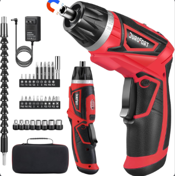
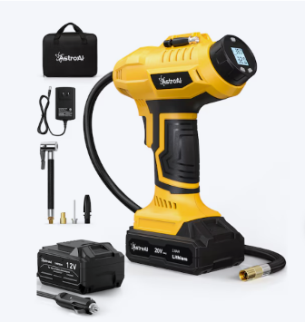
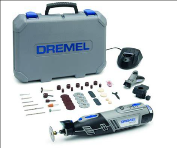

How I work
Skills
My strengths include teamwork, hands-on projects, and finding creative ways to adapt when resources are limited.
Teamwork and working under pressure
I am highly proficient in teamwork and can work under stressful conditions.
Hands-on projects and creative problem solving
Hands-on projects are a strong suit of mine. I adapt to situations by finding creative alternatives when resources are limited or unavailable.
Workshop tools and equipment
I am skilled in using the following workshop tools and equipment:
-

Drills -

Air pumps and compressors -

Dremel rotary tools
See examples of my hands-on work on the Projects page.